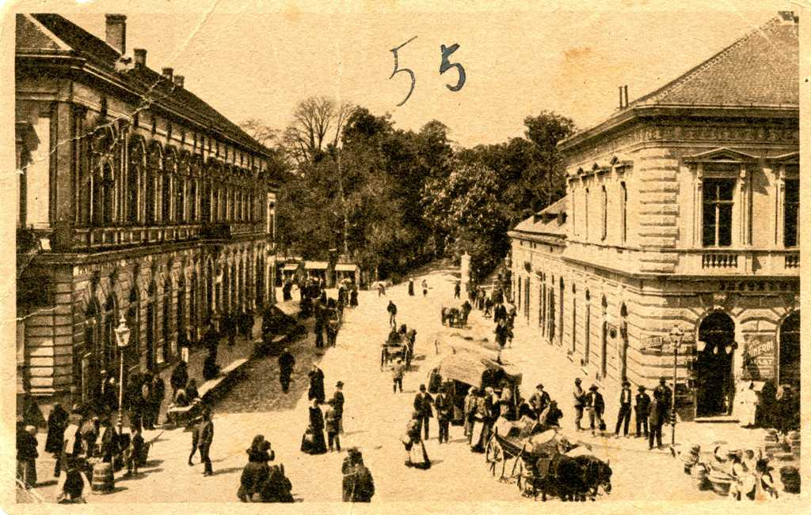
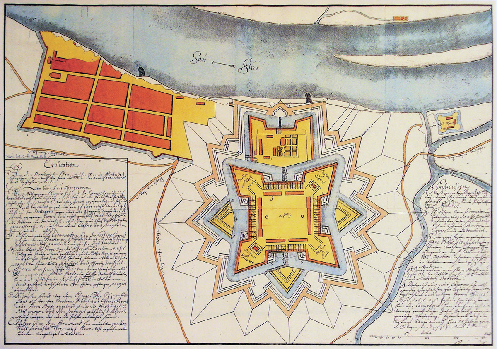
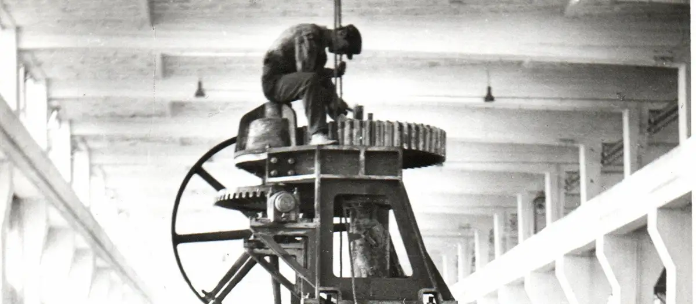
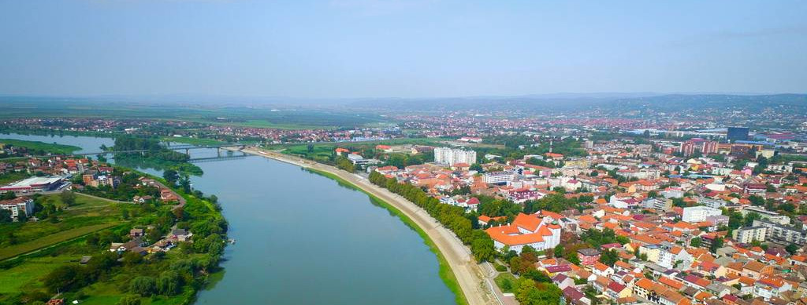
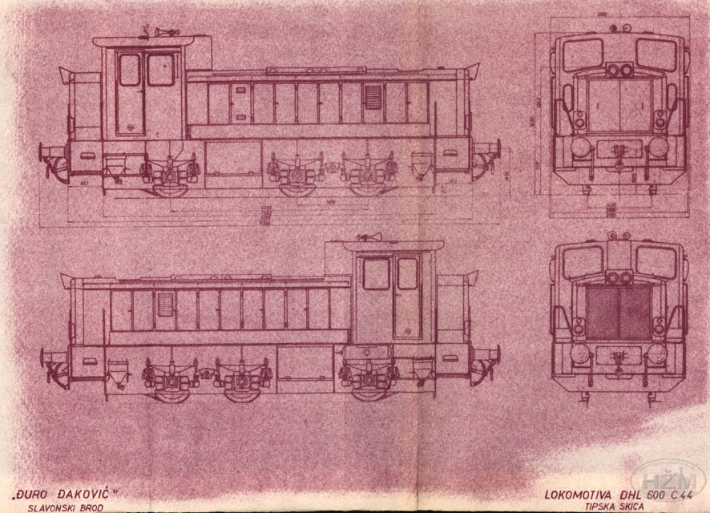

Kratka povijest

Brod
Područje današnjeg Broda naseljeno je još od prapovijesti (antička Marsonija), a pod imenom Brod prvi se put spominje 20. srpnja 1244. godine.
Brod
13. stoljeće

Tvrđava Brod
Austrija u vremenu od 1715. do 1780. godine gradi veliku Carsku i kraljevsku slavonsku pograničnu tvrđavu Brod prema nacrtima princa Eugena Savojskog.
Tvrđava Brod
18. stoljeće

Razvoj i procvat
Godine 1871. grad dobiva status slobodnoga kraljevskog grada i naziv Brod na Savi, dok dolazak željeznice (1878.) i mosta (1879.) potiču snažan razvoj.
Razvoj i procvat
18./19. stoljeće

Slavonski Brod danas
Suvremeni Slavonski Brod najveći je grad slavonske Posavine koji uspješno spaja bogatu kulturnu baštinu, Tvrđavu Brod i industrijsku tradiciju.
Slavonski Brod danas
21. stoljeće
Industrijska baština

Industrijski park predstavlja industrijsku baštinu Slavonskog Broda kroz vozila i strojeve proizvedene u tvornici Đuro Đaković.
Industrijski park Đure Đakovića